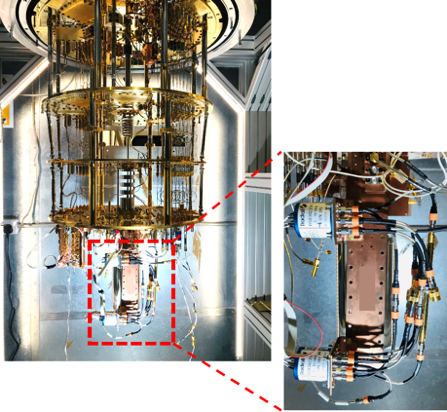

Abstract
- 1Department of Quantum Engineering, Sungkyunkwan University, Gyeonggi, Republic of Korea
- 2National Physical Laboratory, Teddington, U.K.
Progress in quantum computing depends on a thorough understanding of RF and microwave component performance at cryogenic temperatures, including the tens-of-millikelvin regime. However, commercial components are typically not specified for operation at these temperatures, leaving a substantial gap in performance data. Accurate in-situ characterization is further complicated by the long cables connecting room-temperature instruments, such as vector network analyzers (VNAs), to cryogenic devices, which introduce signal loss and noise that limit measurement accuracy. This presentation describes cryogenic S-parameter measurement capabilities developed to address these challenges, focusing on a remote calibration and measurement unit for connectorized coaxial devices at the millikelvin stage [1,2]. It also highlights ongoing developments in on-wafer cryogenic measurements, including a custom calibration substrate designed for accurate characterization at temperatures down to 4 K. The talk will provide an overview of the measurement methodologies, previous work, and current progress in developing these systems.

- S. -H. Shin, M. Stanley, J. Skinner, S. E. de Graaf and N. M. Ridler, "Broadband Coaxial S-Parameter Measurements for Cryogenic Quantum Technologies," IEEE Transactions on Microwave Theory and Techniques, vol. 72, no. 4, pp. 2193-2201, April 2024
- S.-H. Shin, M. Stanley, W. N. Wong, T. Sweetnam, A. Elarabi, T. Lindström, N. M. Ridler, and S. E. de Graaf, “In-operando microwave scattering-parameter calibrated measurement of a Josephson traveling wave parametric amplifier,” Appl. Phys. Lett., vol. 125, no. 10, Art. no. 104001, Sep. 2024.